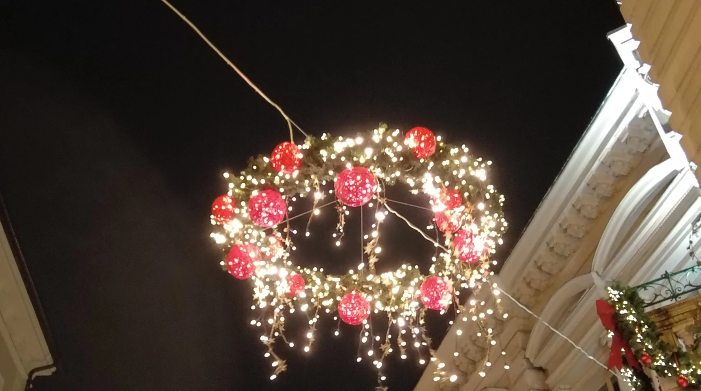

Weihnachtszeit in Bielsko-Biała: mein Spaziergang durch die Lichter
Lichter über den Gassen, ein strahlender Weihnachtsbaum und Reksio im Festtagskleid: meine persönlichen Weihnachtsmomente aus Bielsko-Biała.
Hallo, hier ist Justine aus dem Tussy Van! Manche Reisebilder holen einen sofort zurück in einen Moment. Bei meinen Weihnachtsfotos aus Bielsko-Biała sind es die Lichter: hoch über den Gassen, rund um die Fenster und als Spiegelung auf dem nassen Pflaster. Genau diese warme, festliche Stimmung möchte ich euch zeigen.

Wenn die ganze Gasse leuchtet

Auf meinen Bildern braucht es keinen Schnee, damit Weihnachtsstimmung aufkommt. Der Boden glänzt nach dem Regen, und das Licht spiegelt sich zwischen den alten Fassaden. Über der Straße hängen helle Girlanden, dazwischen farbige Kugeln. Für mich ist das die schönste Einladung, langsamer zu gehen, stehen zu bleiben und auch einmal nach oben zu schauen.
Ich mag an BB gerade diese Mischung: Die Stadt hat ihre eigene Architektur und ihren eigenen Alltag, und in der Weihnachtszeit legt sich dieses warme Licht darüber. Es muss nicht an jeder Ecke ein großes Programm geben. Schon der Weg durch die geschmückten Straßen wird zum Erlebnis.


Ein Weihnachtsbaum, der den Platz verwandelt
Der große Baum mit seinen roten und weißen Motiven gehört zu meinen liebsten Bildern dieses Abends. Unten leuchten Geschenkpakete, darüber zieht sich das Funkeln bis zur Spitze. Ringsherum stehen die Häuser im Dunkeln, auf dem Platz spiegeln sich die Farben. Solche Momente machen für mich einen Winterbesuch besonders: Man schaut auf einen vertrauten Stadtraum und erlebt ihn plötzlich ganz anders.

Rentiere, Weihnachtsmann und ein leuchtender Reksio
Zu den festlichen Motiven auf meinem Spaziergang gehören auch die großen Rentiere mit dem Schlitten und der fröhliche Hund mit Weihnachtsmütze. Reksio passt wunderbar zu Bielsko-Biała und seiner Zeichentrickgeschichte. Da musste natürlich ein Erinnerungsfoto sein – mit meiner pinken Mütze mitten im Lichterglanz.

Mein Tipp für einen Weihnachtsbesuch
Ich würde den Stadtbummel noch bei Tageslicht beginnen und genug Zeit bis zum Abend lassen. Erst die Häuser und Plätze entdecken, zwischendurch aufwärmen und danach noch einmal durch die beleuchteten Straßen gehen. Mit bequemen, wetterfesten Schuhen und ohne zu viele feste Termine lässt sich diese Stimmung am besten genießen.
Meine Fotos sind Reiseerinnerungen aus dem Dezember 2023. Sie zeigen die Dekoration bei diesem Besuch; Aufbau, Beleuchtung und Veranstaltungen können in anderen Jahren anders aussehen. Für euren Termin findet ihr das aktuelle Kulturprogramm über die offizielle Bielsko-Biała-Seite.
BB auch tagsüber entdecken
Wenn ihr länger bleibt, findet ihr in meinem Bielsko-Biała-Reisebericht die Altstadt, Museen, das Animationszentrum OKO und Ideen für die Beskiden. Warum BB auch mein Polen-Tipp von der Leipziger Messe ist, lest ihr im Messebeitrag.
Für mich ist Bielsko-Biała in der Weihnachtszeit eine besonders schöne Polen-Empfehlung: wegen dieser warmen Lichter, der kleinen Entdeckungen unterwegs und der Freude, die in solchen Reisebildern hängen bleibt.
Bis bald und immer gute Fahrt,
eure Tussy